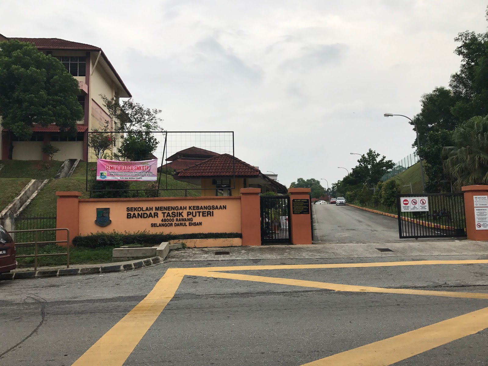

SKTP2 is a primary school in Rawang, Selangor, located at Bandar Tasik Puteri, 48020. I attended this school from the age of eight as a standard two student until the age of twelve as a standard six student. Prior to that, I attended Sekolah Kebangsaan Bandar Tasik Puteri, which is located nearby. When the school first opened, I was among the first to move in. During UPSR, I received 4A 1B

SEKOLAH MENENGAH KEBANGSAAN BANDAR TASIK PUTERI SMKBTP is located in Bandar Tasik Puteri, 48000 Rawang, Selangor. This school educates students from Kindergarten to Grade 5. I started at this schoolin 2014 as a form 1 student and finished in form 5. I took my PT3 in 2015 and my SPM SPM in 2018. During PT3, I received 4A, 4B, and 3C, and for SPM, I received5A, 3B, and 1C.
UiTM CAWANGAN NEGERI SEMBILAN KAMPUS REMBAU I was accepted as a student at UiTM in 2019. I am currently enrolled in semester 5 of the Diploma in Information Management programme at the Faculty of Information Management. I only have a few weeks left to complete my diploma. So far, I'm very happy with the result. I'm hoping to graduate with good.result.